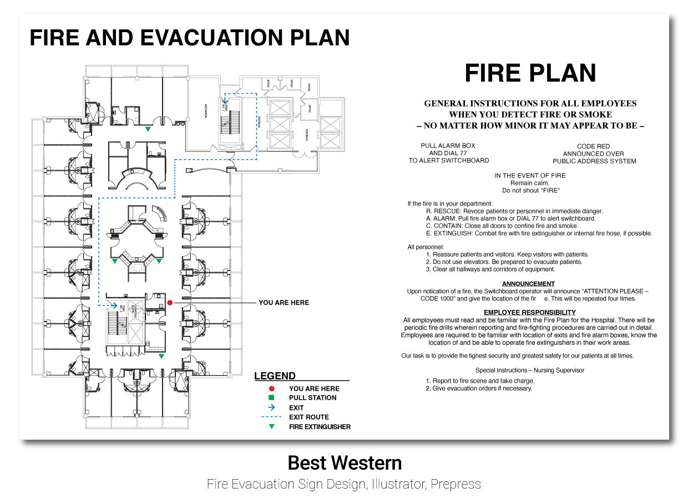
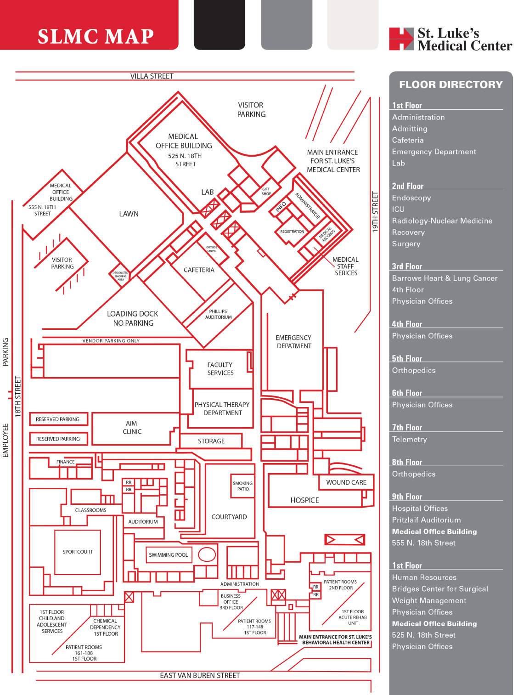
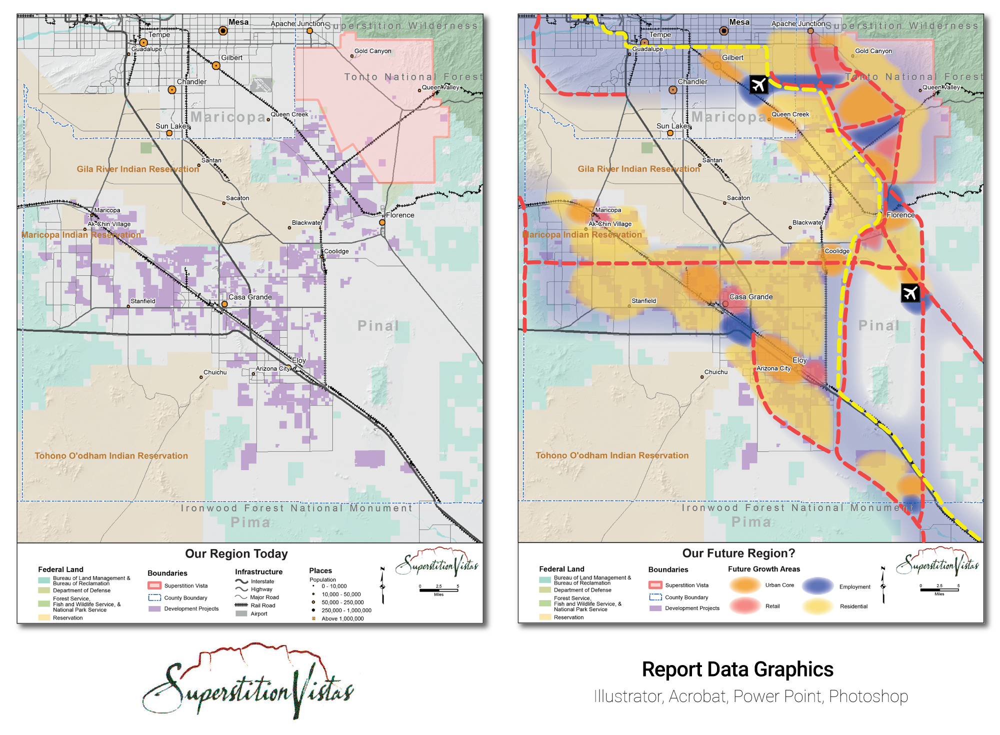
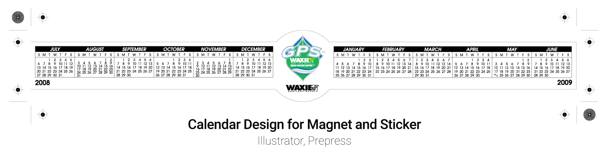

Visual Communication & Information Design
Some projects require expressive branding.
Others require translating complex information into clear visual communication.
A selection of information design work including data visualization, maps, diagrams, and technical graphics.




